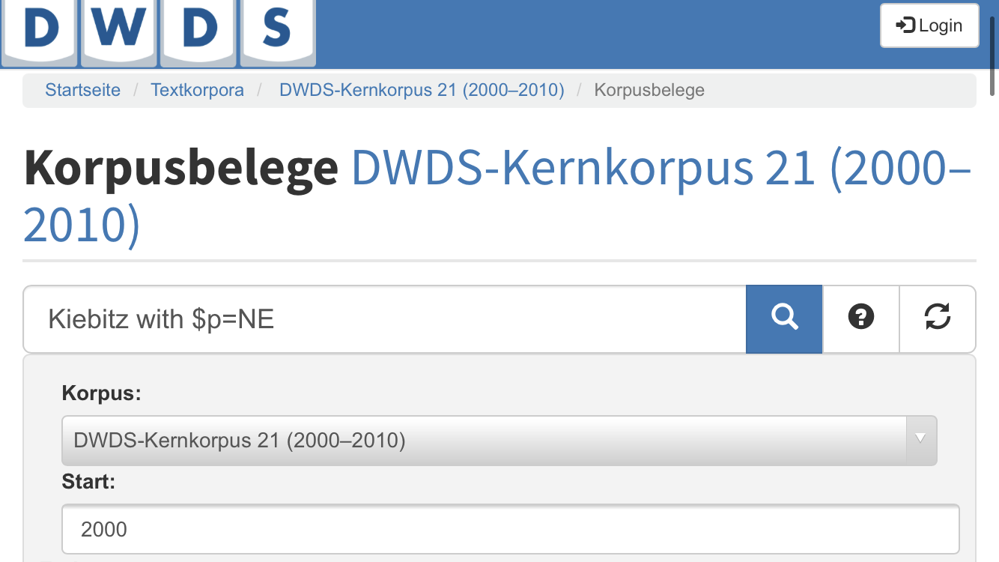

Datenannotation

Die Annotation ist einer der wichtigsten Arbeitsschritte beim Umgang mit sprachlichen Daten, insbesondere bei der Arbeit mit Korpusdaten.
Bei der Arbeit mit Korpusdaten kommt es nicht selten vor, dass man nach der Nadel im Heuhaufen sucht: In einer großen Menge von Korpusdaten verstecken sich interessante Phänomene, die leicht zu übersehen und schwer zu finden sein können. Bei der Suche kann es deshalb helfen, den Heuhaufen (also: die Korpusdaten, mit denen Sie arbeiten) zu annotieren, um so die Nadel (das für Sie interessante sprachliche Phänomen) finden zu können.

Und vielleicht finden Sie ganz nebenbei noch ein paar weitere Nadeln (Phänomene), von denen Sie vorher gar nichts wussten. Die Datenannotation steht deshalb in enger Beziehung zur linguistischen Analyse.
Was ist Annotation?

Wenn Sie das Wort Annotation oder annotieren noch nie gehört haben, erfahren Sie im Folgenden, was darunter zu verstehen ist und wie sich der Prozess der Annotation von anderen Möglichkeiten, Daten anzureichern, unterscheidet.
Definition
Was genau versteht man unter der Annotation sprachlicher Daten? Versuchen wir es mit einer Definition:

Annotation ist die Anreicherung sprachlicher Daten, insbesondere Korpusdaten, mit linguistischen Informationen.
Ein einfaches Beispiel: Stellen Sie sich vor, Sie möchten die Überschriften von Artikeln der Online-Ausgaben deutscher Tageszeitungen untersuchen.
Wenn Sie jetzt beispielsweise herausfinden möchten, ob bei Zeitung A Nomen oder Verben häufiger in den Überschriften vorkommen und wie diese Verhältnisse bei Zeitung B oder C aussehen, müssen Sie die Möglichkeit haben, die Überschriften auf diese Wortarten hin auszuwerten. Die Überschriften selbst aber verraten Ihnen noch nichts, denn die Wörter tragen die Informationen, welcher Wortart sie angehören, ja nicht mit sich. Wenn Sie die Überschriften auf Wortarten untersuchen möchten, müssen Sie jedem einzelnen Wort zunächst seine Wortart zuordnen und diese Ergebnisse in irgendeiner Form dokumentieren.
Und noch etwas: Wenn Sie eine Zeitung lesen, sind Überschriften visuell sehr einfach zu erkennen. Wenn Sie mit einem bestehenden Korpus wie beispielsweise dem Deutschen Referenzkorpus oder den DWDS-Korpora arbeiten, fällt diese visuelle Markierung weg. Damit Sie überhaupt nach Nomen und Verben in Überschriften suchen können, müssen auch die Überschriften als solche gekennzeichnet werden. Sie müssen den einzelnen Teilen eines Artikeltextes also zunächst die Information zuweisen, ob es sich dabei um die Überschrift, die Leadzeile (die kurze Zusammenfassung unter der Überschrift), den Haupttext oder gar die Datumsangabe handelt.
Diesen Prozess der Zuweisung von Informationen zu sprachlichen Daten nennt man Annotieren. Erst wenn dieser Prozess abgeschlossen ist können Sie Ihre Forschungsfrage beantworten, indem Sie die Häufigkeiten der einzelnen Wortarten in den Überschriften auswerten.
Annotation vs. Metadaten
Wie Sie vielleicht an der obigen Definition erkennen, handelt es sich nicht bei jeder Anreicherung sprachlicher Daten um Annotation im engeren Sinne. Die Betonung liegt nämlich auf der Anreichung durch linguistische Informationen. Informationen, die nicht linguistischer Natur sind, sind für die sprachwissenschaftliche Arbeit aber ebenso unverzichtbar. Dazu gehören vor allem Metadaten. Annotationen beziehen sich üblicherweise auf Wörter und Sätze, seltener auch auf satzübergreifende sprachliche Phänomene. Metadaten hingegen beziehen sich meist auf ganze Texte, Textverbünde oder ganze Korpora.
Zu den Metadaten, die sich auf ein ganzes Korpus oder Teilkorpus beziehen, gehören Angaben wie:
- der Zweck des Korpus (z.B. die Untersuchung bestimmter Dialekte oder der gesprochenen Sprache);
- die Zusammensetzung des Korpus (aus welchen Texten oder sprachlichen Aufzeichnungen des Korpus besteht, z.B. ausschließlich Zeitungstexte oder auch Internetquellen oder sogar Chatverläufe);
- die durch das Korpus abgedeckten Einzelsprachen oder Sprachausschnitte (also z.B. Deutsch oder Englisch, aber auch Dialekte wie Alemannisch oder Berlinerisch);
- die Nutzungsrechte der im Korpus enthaltenen Texte (z.B. ob ganze Texte oder nur Ausschnitte abgerufen werden dürfen);
- bibliographische Angaben, z.B. darüber, wie das Korpus in einer linguistischen Arbeit zitiert werden soll.
Wenn wir die Metadaten einzelner Texte betrachten, kommen natürlich noch einige Informationen hinzu:
- das Entstehungsdatum oder der Entstehungszeitraum des Textes (also z.B. das Datum der Veröffentlichung eines Zeitungsartikels oder das Veröffentlichungsjahr eines Romans;
- das Thema des Textes und/oder seine Textsorte (z.B. Zeitungsartikel, Belletristik, wissenschaftliche Literatur; Angaben zur Länge des Textes (z.B. Anzahl der Wörter und Sätze).
Darüber hinaus lassen sich auch noch Informationen hinzufügen, die bereits unterhalb der Ebene eines Textes liegen, so etwa seine Struktur in Teiltexten (bei Zeitungsartikeln z.B. Dachzeile, Überschrift, Leadtext, Absätze), aber auch die Segmentierung nach Seiten, Kapiteln, Abschnitten, Sätzen und Wörtern. Damit sind wir schon an der Grenze zu Annotationen im engeren Sinne angekommen, also linguistischen Informationen.
Annotierte Korpora vs. eigene Annotationen
Wenn wir mit annotierten, also um linguistische Informationen angereicherten Daten arbeiten möchten, haben wir grundsätzlich zwei Möglichkeiten, dies zu tun, je nachdem, ob wir auf den Annotationen anderer beruhen oder selbst Annotationen durchführen. Deswegen müssen wir unterscheiden zwischen:
- annotierten Korpora (oder anderen Ressourcen) und
- eigenen Annotationen
Wenn Sie ein bereits bestehendes öffentliches Korpus benutzen, wird es in der Regel schon über Annotationen verfügen. Gängig ist insbesondere die Annotation der Wortarten und der Lemmata (also der Grundformen von Wörtern, z.B. sein für bin, ist, sind etc.). Das ermöglicht es Ihnen beispielsweise, gezielt nach Wörtern zu suchen, die zu einer bestimmten Wortart gehören (z.B. nach Substantiven). In diesen Fällen können Sie davon profitieren, dass jemand anders die Annotationsarbeit schon für Sie gemacht hat. Um bestehende Annotationen zu verstehen und richtig damit umgehen zu können, ist es jedoch sinnvoll, auch eigene Annotationeerfahrungen zu sammeln. Deshalb werden wir uns in diesem Tutorial auf die eigene Annotation konzentrieren.
Wenn Sie sich für die Hintergründe annotierter Korpora interessieren, sei Ihnen ein Blick in einschlägige Fachliteratur empfohlen, z.B. das Kapitel 4 von Lemnitzer/Zinsmeister (2015).
Eigenes Annotieren: Wo fange ich an?
Bevor Sie damit anfangen, selbst zu annotieren, sollten Sie sich bewusst machen, mit welcher Art von Daten Sie es zu tun haben. Haben Sie z.B. selbst ein Korpus aufgebaut und möchten nun damit beginnen, dieses zu annotieren? Oder haben Sie Daten aus einem bestehenden Korpus entnommen und möchten diese nun im Hinblick auf Ihre Forschungsfrage und Ihre Hypothese mit zusätzlichen Annotationen anreichern, die das Korpus selbst nicht bietet?
Apropos Forschungsfrage und Hypothese: Wichtig ist, dass Sie beide so präzise wie möglich formuliert haben, noch bevor Sie mit der Annotation beginnen. Denn: Nur wenn Sie wissen, was Sie konkret untersuchen möchten, können Sie gezielt Annotationen vornehmen. Der schlechteste Fall wäre, dass Sie einfach ‘ins Blaue hinein’ annotieren und letztendlich über Daten verfügen, für die Sie viel Zeit investiert haben, die Ihnen bei Ihrem Forschungsprojekt aber nicht weiterhelfen. Im Umkehrschluss kommen Sie der Beantwortung Ihrer Forschungsfrage und einer Bestätigung oder Widerlegung Ihrer Hypothese durch Datenannotationen sehr nah. Die Datenannotation ist damit ein wichtiger Teil der Operationalisierung Ihrer Forschungsfrage und Hypothese.
Datenannotation ist ein vielschichtiges Gebiet, Sie müssen bei der Durchführung eigener Annotationen das Rad aber nicht neu erfinden. In jedem Fall sollten Sie sich an bestehenden Standards orientieren, denn Sie sind sicher nicht die erste und letzte Person, die an für Sie relevanten Daten arbeitet. Annotationsstandards sind wichtig, um
- eine einfache Weitergabe und Nachnutzung Ihrer Daten (durch andere Personen) zu ermöglichen und
- Tools, die Sie bei der Annotation unterstützen sollen, nutzen und Auswertungen Ihrer Annotationen vornehmen zu können.
Weil es wichtig ist, dass Sie Annotationsstandards schon kennen, bevor Sie mit Ihrer eigenen Annotation beginnen, sehen wir uns diese zuerst an.
Standards
Annotationsstandards erfüllen zwei wesentliche Zwecke: Sie stellen zum einen sicher, dass Ihre Annotationen an andere Personen weitergegeben und sinnvoll weitergenutzt werden können, und sie ermöglichen zum anderen ein konsistentes Vorgehen, das durch Annotationstools unterstützt werden kann, damit Sie nicht manuell (z.B. in einer Textdatei) annotieren müssen, was durchaus anfällig für Fehler sein kann.
Der Begriff Annotationsstandard kann sich auf unterschiedliche Dinge beziehen: Zum einen spricht man von Annotationsstandards, wenn es um konkrete Annotationsschemata geht, die ein standardisiertes Inventar an Annotationen für einen bestimmten Bereich (z.B. die Annotation von Wortarten) zur Verfügung stellen. Auf diese Annotationsschemata kommen wir gleich zurück. Zum anderen kann sich der Begriff aber auch auf “Best-practice”-Standards für die Datenannotation im Allgemeinen beziehen.
In diesem letztgenannten Sinn verwendet Leech (1997) den Begriff, wenn er fünf Annotationsstandards formuliert, die wir im Folgenden leicht verändert wiedergeben (deutsche Übertragung in Anlehnung an Lemnitzer/Zinsmeister 2015: 98).
- Annotationen sollten so eingetragen sein, dass man den Ursprungstext wiederherstellen kann.
- Es sollte möglich sein, Annotationen unabhängig vom Ursprungstext abzuspeichern und auszuwerten.
- Die Annotationen sollten dokumentiert werden, z.B. in Form von Annotationschemata und Annotationsrichtlinien. Das heißt konkret:
- Die Annotator*innen und die Annotationsumstände sollten bekannt sein.
- Die Qualität des zu annotierenden Korpus sollte überprüft und dokumentiert werden. Die späteren Benutzer*innen sollten erfahren, wie konsistent die Annotation ist.
- Das verwendete Annotationsschema sollte so weit wie möglich theorieneutral sein.
- Kein Annotationsschema kann von vornherein als Standard gelten, denn Standards bilden sich durch einen Konsens der Annotator*innen und Benutzer*innen.
Wenn Sie ein Annotationstool verwenden, müssen Sie sich über die ersten beiden Annotationsstandards in den meisten Fällen nicht sorgen. In der Regel stellen solche Tools von vornherein sicher, dass der Ursprungstext unberührt bleibt. Der dritte Punkt ist der wohl wichtigste, weshalb wir auf die Dokumentation der Annotation in Annotationsschemata und Annotationsrichtlinien noch zurückkommen. Der vierte Punkt hängt natürlich stark von Ihrer Forschungsfrage und der Theorie ab, in der Sie sich bewegen. Wenn Sie aber Wert darauf legen, dass Ihre Annotationen durch andere Personen weitergenutzt werden sollen, sollten Sie möglichst auf Theorieneutralität achten. Und schließlich möchte Ihnen der fünfte Punkt sagen, dass Sie ganz sicher ein paar Anläufe brauchen werden, um gut nutzbare Annotationen herzustellen, keine Annotation ist direkt beim ersten Anlauf perfekt. Datenannotation ist in aller Regel ein iterativer Prozess – auch darauf kommen wir noch zurück.
Annotationsebenen
Jetzt wissen Sie schon, was man bei der Annotation von sprachlichen Daten grundsätzlich beachten sollte. Bevor wir dazu kommen, wie ein Annotationsschema und Annotationsrichtlinien aufgebaut sein sollten und wie Sie das richtige Annotationstool für Ihr Projekt finden, möchten Sie sicher wissen, mit welchen linguistischen Informationen sprachliche Daten überhaupt angereichert werden können. Damit sind wir bei unterschiedlichen Annotationsebenen. Jede sprachliche Äußerung, die Sie in einem Korpus finden können, verfügt über grammatische Eigenschaften hinsichtlich der Morphologie einzelner Wörter, der syntaktischen Strukturen des Satzes, aber auch die semantische und pragmatische Ebene sollte natürlich nicht übersehen werden. Diese einzelnen Charakteristika einer sprachlichen Äußerung stellen unterschiedliche Annotationsebenen dar, die Sie potenziell annotieren könnten. Wie weiter oben schon gesagt, macht es in der Regel aber keinen Sinn, einfach auf gut Glück alle möglichen Ebenen zu annotieren – in der Forschungspraxis sollte die Annotation von einer konkreten Fragestellung motiviert sein. Wenn wir diesen Aspekt im Folgenden ausblenden, dann nur, um Ihnen die große Bandbreite an prinzipiell möglichen Annotationen aufzuzeigen.
Verdeutlichen wir uns das Ganze an einem Beispiel. Gegeben sei der folgende kleine Textauszug:
Deutschland hat seinen Lieblingsvogel gekürt: Das Rotkehlchen ist der “Vogel des Jahres” 2021, wie der Naturschutzbund Deutschland (NABU) und der bayerische Landesbund für Vogelschutz (LBV) bekanntgaben. Damit setzte sich der Singvogel gegen die anderen neun Kandidaten durch, die zur Wahl standen: Rauchschwalbe, Kiebitz, Feldlerche, Stadttaube, Haussperling, Blaumeise, Eisvogel, Goldregenpfeifer und Amsel. (https://www.tagesschau.de/inland/gesellschaft/vogel-des-jahres-105.html)
Dieser Textauszug lässt sich nun nach den unterschiedlichen Annotationsebenen, die wir eben gesehen haben, annotieren. Die folgende Grafik zeigt exemplarisch, wie das aussehen kann.

Im Such- und Visualisierungstool ANNIS, mit dem dieser Screenshot gemacht wurde, sehen wir die Annotationen buchstäblich auf unterschiedlichen Ebenen. Auf der Lemma-Ebene sind die Grundformen der einzelnen Wörter angegeben, auf der POS-Ebene die Wortarten, auf der morphology-Ebene die Eigenschaften der einzelnen Morpheme (d.h. ob es sich um Stämme, Präfixe, Suffixe, Kompositionsglieder etc. handelt). Und auf der phrase-Ebene schließlich wurde eine sehr einfache Phrasenstrukturanalyse vorgenommen.
Halten wir also fest: Linguistische Annotationen können wir auf ganz unterschiedlichen Ebenen vornehmen, von der Morphosyntax und Syntax bis hin zur Semantik und sogar zur Pragmatik. Gehen wir diese vier Bereiche nun im Einzelnen durch.
Morphosyntax
Die kleinsten sprachlichen Einheiten, für die Annotationen vorgenommen werden, sind i.d.R. Wörter und deren innere Struktur. In der Sprachwissenschaft untersucht man diese in der Morphologie, die einen der beiden wesentlichen Teilbereiche der Grammatik darstellt. Da Wörter jedoch oft auch Eigenschaften aufweisen, die durch ihre Stellung im Satz begründet ist, spielt die Syntax, der zweite wesentliche Teilbereich der Grammatik, eine nicht zu unterschätzende Rolle. Bei der Annotation auf der Ebene von Wörtern kann man deshalb zusammenfassend von der morphosyntaktischen Ebene sprechen.
Die wichtigste morphosyntaktische Annotation ist die Zuweisung von Wortarten zu den einzelnen Wörtern eines Textes. Für jedes Wort wird also bestimmt, welcher Wortart es angehört und diese Information wird gemeinsam mit dem Originaltext abgespeichert. Im englischsprachigen Raum lautet die Bezeichnung für Wortart part of speech (POS), man spricht für die Annotation von Wortarten deshalb oft auch von Part-of-Speech-Tagging oder POS-Tagging.
Tags und Tagsets
Morphosyntaktische Annotationen werden heutzutage in den wenigsten Fällen manuell, sondern in der Regel automatisch durch spezielle Software – sogenannte Tagger bzw. Parser – vorgenommen. Der Begriff Tagger leitet sich von dem englischen Begriff Tag ab, den Sie in etwa mit ‘Etikett’ übersetzen können. Bei einer morphosyntaktischen Annotation bekommt jedes Wort entsprechend einen oder mehrere Tags zugewiesen, die (im Falle von POS-Tagging) sozusagen die ‘Wortartenetiketten’ für jedes Wort darstellen. Viele öffentlich zugängliche Korpora sind bereits morphosyntaktisch mit Wortarteninformationen annotiert, sodass Sie in Ihrer Suchanfrage davon Gebrauch machen und gezielt nach Wortarten suchen können.
Wie Sie wahrscheinlich wissen, gibt es in der Sprachwissenschaft sehr unterschiedliche Vorstellungen darüber, wie viele Wortarten existieren und wie man sie auseinanderhalten soll. Vor diesem Problem steht grundsätzlich auch jedes Vorhaben einer morphosyntaktischen Annotation, denn um den einzelnen Wörtern eines Textes Wortarten zuweisen zu können, müssen Sie erst einmal festlegen, welche Wortarten-Tags Sie dabei vergeben können. Sie brauchen also eine Sammlung potenzieller Tags, die Sie vor dem Beginn der Annotation definieren müssen. Eine solche Sammlung nennt man ein Tagset.
Stuttgart-Tübingen-Tagset (STTS)
Doch keine Sorge: Sie müssen sich nicht immer selbst ein Tagset zusammenstellen. Für die morphosyntaktische Annotation von Wortarten hat sich im deutschsprachigen Raum das Stuttgart-Tübingen-Tagset (STTS) durchgesetzt. Das sogenannte kleine Tagset des STTS umfasst 54 Tags, die neben der Wortart auch Informationen über die syntaktische Distribution eines Wortes (z.B. Präposition oder Postposition), die grammatische Funktion (z.B. attributiv oder prädikativ verwendetes Adjektiv), morphologische Eigenschaften (z.B. finites Verb vs. Infinitform) und semantische Eigenschaften (z.B. Nomen als Gattungsbegriff vs. Eigenname) umfasst.
Wenn Sie sich für die Details der einzelnen Tagsets des STTS interessieren (neben dem kleinen gibt es natürlich auch ein großes Tagset), seien Ihnen die Annotationsrichtlinien, die Sie online unter https://www.ims.uni-stuttgart.de/documents/ressourcen/lexika/tagsets/stts-1999.pdf einsehen können, ans Herz gelegt.
Um auf unseren Beispiel-Textauszug zurückzukommen: Wie kann eine morphosyntaktische Annotation mittels des STTS aussehen? Den einzelnen Wörtern des ersten Satzes Deutschland hat seinen Lieblingsvogel gekürt ließen sich beispielsweise die folgenden STTS-Tags zuordnen:
Deutschland/NE hat/VAFIN seinen/PPOSAT Lieblingsvogel/NN gekürt/VVPP
Die Abkürzungen, die Sie hier den einzelnen Wörtern angehängt sehen, sind einzelne Wortarten-Tags: NE steht für ein Nomen als Eigenname, VAFIN für ein finites Auxiliarverb (hier: ein Hilfsverb), PPOSAT steht für ein attributiv gebrauchtes Possessivpronomen (manchmal auch Possessivartikel genannt), NN steht für ein normales Nomen, also ein Nomen als Gattungsbegriff, und VVPP steht für ein nicht-flektiertes Partizip Perfekt.
Mehr als Wortarten
Auf morphosyntaktischer Ebene werden allerdings nicht nur Wortarten annotiert. Die meisten automatischen Tagger können noch mehr: Sie führen Wörter in der Regel auf ihre Grundform zurück, was man als Lemmatisierung bezeichnet. Nur so können Sie sich z.B. alle Wortformen eines Verbs anzeigen lassen. Wenn Sie nach dem Verb küren suchen, ermöglicht es Ihnen die Lemmatisierung, auch Formen wir kürt, kürte, kürten oder gekürt zu finden, ohne dass Sie dafür einzelne Suchanfragen stellen müssen.
Wie Sie an unserem Beispiel für das STTS gesehen haben, werden dort aber auch Informationen wie die Finitheit eines Verbs (ob es also finit oder infinit vorkommt) oder bestimmte semantische Klassen von Nomen (Gattungsbegriffe vs. Eigennamen) annotiert. Damit ist bereits die Annotationsebene der Semantik berührt, zu der wir noch kommen.
Wenn Sie sich die Annotationsrichtlinien des STTS ansehen, fällt Ihnen sicher auf, dass das Tagset wesentlich mehr Tags umfasst als Sie noch aus der Wortarteneinteilung Ihres Grammatikseminars kennen. Das liegt nicht nur daran, dass das STTS, wie gerade gesehen, einige Worartenkategorien feiner untergliedert (z.B. bei Nomen zwischen Gattungsbegriffen und Eigennamen unterscheidet, bei Verben nach ihrer Finitheit), sondern dass das es auch Satzzeichen und Sonderzeichen umfasst, die Sie natürliche ebenso in eine Korpusrecherche einbeziehen können.
Syntax
Verlassen wir nun die Ebene einzelner Wörter und wenden wir uns der Struktur von Sätzen zu, die man in der Grammatik im Teilgebiet der Syntax untersucht. Bei der syntaktischen Annotation müssen wir unterscheiden zwischen der Annotation einzelner syntaktischer Phänomene einerseits und der syntaktischen Annotation eines gesamten Korpus andererseits. Da wir uns in diesem Tutorial auf manuelle Annotation konzentrieren wollen, streifen wir den letztgenannten Aspekt nur kurz, denn ein ganzes Korpus manuell mit syntaktischer Annotation zu versehen, wäre selbst bei kleineren Korpora zu aufwändig und dank vorhandener computerlinguistischer Tools auch gar nicht nötig (zumindest solange wir mit gut dokumentierten Sprachen wie dem Deutschen arbeiten).
Wie Sie vielleicht noch aus Ihrer Grammatik-Einführung wissen, werden syntaktische Strukturen häufig als Baumdiagramme (oder kurz: Bäume) dargestellt. Syntaktisch annotierte Korpora nennt man deshalb auch Baumbanken (von engl. treebanks). Je nachdem, wie man beim Aufbau eines Syntaxbaums vorgeht, unterscheidet man zwischen Dependenz und Konstituenz. Eine Dependenzstruktur geht davon aus, dass alle Elemente in einem Satz von einem einzigen Element abhängen (Dependenz bedeutet entsprechend ‘Abhängigkeit’). In den meisten Fällen ist dieses Element das Verb: Eine dependenzgrammatische Theorie, die Verben in den Vordergrund stellt, ist die Valenztheorie. In einer Dependenzstruktur ist das Verb das sogenannte Regens, alle von ihm abhängigen Elemente nennt man Dependentien.
Bei einer Konstituentenstruktur steht nun nicht die Abhängigkeit unterschiedlicher Dependentien von einem Regens im Vordergrund, sondern die hierarchische, lineare Struktur der einzelnen syntaktischen Konstituenten eines Satzes. Diese Konstituenten werden in der Grammatik meist in Form von Phrasen beschrieben, also als Nominalphrasen (NP), Verbalphrasen (VP), Präpositionalphrasen (PP) usw. Während bei einer Dependenzstruktur der oberste Knoten eines Baumes das Verb (das Regens) ist, ist das bei einer Konstituentenstruktur der ganze Satz (abgekürzt: S). Ein Korpus, das syntaktisch nach Dependenzstrukturen annotiert ist, ist die Hamburg Dependency Treebank. Eine nach Konstituentenstrukturen annotierte Baumbank ist das TIGER-Korpus.
Syntaktische Annotation in der Praxis
Baumbanken eignen sich gut zur korpusbasierten Untersuchung syntaktischer Fragestellungen. Allerdings ist es in den meisten Fällen weder notwendig noch zielführend, ein komplettes eigenes Korpus mit Konstituenten- oder Dependenzannotation zu versehen. Gerade im Falle von Seminar- und Abschlussarbeiten dürfte eine viel gängigere praktische Herausforderung die sein, konkrete syntaktische Phänomene zu annotieren. So könnte eine mögliche diachrone Fragestellung sein, wie sich die Stellung des Genitivs diachron verändert hat. Insgesamt lässt sich hier nämlich eine Tendenz von Prästellung zu Poststellung beobachten (meines Vaters Haus > das Haus meines Vaters), die allerdings abhängig von verschiedenen Variablen sehr unterschiedlich ausfällt: So ist bei einigen Eigennamentypen die Prästellung noch klar die gängigere Option (Peters Auto – das Auto Peters klingt mindestens sehr formell, wenn nicht sogar äußerst merkwürdig; anders z.B. bei Ereignisnamen: die Folgen des Zweiten Weltkriegs, nicht ?des Zweiten Weltkriegs Folgen).
Nehmen wir an, wir haben eine Konkordanz, die bereits alle Genitiv-NPs aus einem Korpus enthält, so können wir die einzelnen Belege in der Konkordanz zunächst einmal einfach daraufhin annotieren, ob es sich um einen Beleg für Prä- oder für Poststellung handelt.
| Beleg | Stellung |
|---|---|
| des Vaters Haus | Prästellung |
| das Auto der Kanzlerin | Poststellung |
Je nachdem, welche Hypothesen wir darüber haben, welche Faktoren die Genitivstellung beeinflussen, können wir weitere syntaktische und/oder semantische Annotationskriterien ansetzen, für die wir dann in der Konkordanz neue Annotationsspalten anlegen. Für die einzelnen Annotationskategorien gilt, dass sie eine Analysedimension abbilden sollten. Analog zum “Tidy Data”-Prinzip, das wir bereits kennengelernt haben, könnten wir hier vom “Tidy Categories” Prinzip sprechen: 1 Annotationskategorie = 1 Analysedimension.
Das mag trivial klingen, in der Praxis kommt es aber durchaus vor, dass mehrere Analysedimensionen in einer Kategorie vermischt werden. Das wäre beispielsweise dann der Fall, wenn ich semantische Rollen (Agens, Patiens etc.) und syntaktische Funktionen (Subjekt, Objekt usw.) auf der gleichen Annotationsebene (hier also: in der gleichen Annotationsspalte) annotieren würde. Diese beiden Kategorien korrelieren zwar oft (Agens ist häufig Subjekt, Patiens häufig Objekt: BrutusAgens, Subjekt tötet CäsarPatiens, Objekt), aber eben nicht immer (CäsarPatiens, Subjekt wird von BrutusAgens, Objekt getötet).
In anderen Fällen könnte es beispielsweise relevant sein, ob ein Phänomen in einem Haupt- oder in einem Nebensatz auftritt. So lässt sich zeigen, dass z.B. die Alternation zwischen futurischem Präsens (Ich gehe morgen ins Kino) und werden + Infinitiv (ich werde morgen ins Kino gehen) vom Satztyp abhängt. Die scheinbar so einfache Unterscheidung von Haupt- und Nebensatz bringt aber viele Folgefragen mit sich und erfordert die Ausarbeitung guter Annotationskriterien, da z.B. entschieden werden muss, wie man z.B. mit Grenzfällen wie Weil sie gendert: Zuschauer sind wütend auf heute-Moderatorin Petra Gerster (Quelle ) umgeht.
Auch bei der Annotation syntaktischer Kategorien kommt es also darauf an, Fragestellungen gut zu operationalisieren und diese Operationalisierung vor allem nachvollziehbar zu dokumentieren.
Semantik
Während morphosyntaktische und syntaktische Annotationen zu einem großen Teil durch Parser und Tagger übernommen werden können und nicht mehr manuell durchgeführt werden müssen, ist dies auf der Ebene der Semantik anders. Zwar existieren zahlreiche Forschungen für die automatische semantische Annotation von Korpora, eine wirklich verlässliche und auf die eigene Forschungsfrage bezogene semantische Annotation kann jedoch nach wie vor nur manuell erfolgen.
Gerade weil morphosyntaktische und syntaktische Annotationen in den meisten öffentlich verfügbaren Korpora bereits implementiert sind, sind semantische Annotationen (neben pragmatischen) für die eigene Annotationsarbeit vermutlich am interessantesten. So vielfältig wie die Bedeutungen von Wörtern sein können, so vielfältig können auch die Arten semantischer Annotationen sein. Es versteht sich von selbst, dass es sehr stark von Ihrer Forschungsfrage abhängt, welche semantischen Annotationen für Sie relevant sind. Wir können Ihnen in diesem Kapitel deshalb nur einige wenige Vorschläge und Prinzipien aufzeigen, an denen Sie sich orientieren können.
Wie schon bei den grammatischen Annotationsebenen der Morphosyntax und Syntax kann man auch bei semantischen Annotationen danach unterscheiden, ob sie sich auf einzelne Wörter oder ganze Sätze beziehen. Annotationen, die über einzelne Sätze hinausgehen, kann man bei pragmatisch orientierten Forschungsfragen vornehmen. Dazu kommen wir später.
Semantik auf Wortebene: Von lexikalischen Bedeutungen zu Metaphern
So wie man die Wortarten einzelner Wörter annotieren kann, lassen sich diesen Wörtern auch ihre lexikalischen Bedeutungen (Wortbedeutungen) zuordnen. Lexikalische Bedeutungen zu beschreiben ist alles andere als ein einfaches Unterfangen, deswegen lohnt es sich, bei der Annotation auf vorhandene Ressourcen zurückzugreifen, in denen Sie lexikalische Bedeutungen nachschlagen können. Solche Ressourcen sind Wörterbücher.
Eine nützliche Quelle für die lexikalischen Bedeutungen von Wörtern sind die unter dem Dach des Digitalen Wörterbuchs der Deutschen Sprache (DWDS) zusammengetragenen Wörterbücher, die Sie online durchsuchen können. Blicken wir dafür noch einmal in unseren Beispieltextauszug, genauer auf den folgenden Satz:
Damit setzte sich der Singvogel gegen die anderen neun Kandidaten durch, die zur Wahl standen: Rauchschwalbe, Kiebitz, Feldlerche, Stadttaube, Haussperling, Blaumeise, Eisvogel, Goldregenpfeifer und Amsel.
Die Folgenden Wörter interessieren uns besonders: durchsetzen, Kandidat und Wahl. Für das Verb durchsetzen finden wir im DWDS die Bedeutung ‘etw. trotz Widerstandes erreichen, zur Geltung bringen’, also durchsetzen im Sinne von der Lehrer musste sich in der Klasse durchsetzen. Diese Bedeutung ist in unserem Beispieltextauszug aber offensichtlich nicht gemeint. Dazu gleich mehr.
Versuchen wir es mit dem Nomen Wahl. Hier haben wir mehr Glück und finden u.a. die Bedeutung ‘Abstimmung, durch die eine Person in ein Amt, in eine Funktion oder durch die ein Gremium, eine Vertretungskörperschaft berufen wird’. Mit etwas Fantasie können wir diese Bedeutung durchaus auf die Wahl des Lieblingsvogels in Deutschland, um die es in unserem Beispieltext geht, anwenden. Ideal ist das aber sicher nicht. Auch darauf kommen wir gleich zurück.
Jetzt noch das Nomen Kandidat. Hier finden wir u.a. die Bedeutung ‘Bewerber und Anwärter’, genauer: ‘jmd., der für eine Wahl nominiert worden ist’. Auch hierfür brauchen wir etwas Fantasie, damit diese Bedeutung passt.
Die Bedeutungsparaphrasen, die Sie im DWDS finden, können eine gute Grundlage für die semantische Annotation auf Wortebene darstellen. Sie sind insbesondere dann hilfreich, wenn Sie überprüfen wollen, ob für bestimmte Wörter noch weitere Bedeutungen auffindbar sind, die über diejenigen im DWDS dokumentierten hinausgehen. Sollten Sie für bestimmte Wörter keine oder keine passenden lexikalischen Bedeutungen finden können, ist das ein Anzeichen dafür, dass hier Bedeutungen vorliegen, die (noch) nicht in einem Wörterbuch wie dem DWDS erfasst sind.
Damit nochmal zurück zu unseren Beispielen. Dass die Bedeutungsparaphrasen im DWDS nicht völlig zufriedenstellend auf unseren Beispieltextauszug anwendbar sind, liegt offensichtlich daran, dass zumindest die Wörter durchsetzen und Wahl, zu gewissen Teilen aber auch Kandidat, nicht im wörtlichen Sinne gebraucht werden. Es handelt sich um Metaphern. Wahrscheinlich verbinden Sie das Verb durchsetzen und auch das Nomen Kandidat eher mit einem ‘Spiel’ als mit einer politischen oder andersartigen ‘Wahl’. Damit würden Sie gar nicht so falsch liegen. Im Sinne der Theorie der konzeptuellen Metaphern von Lakoff/Johnson (1980) könnte man hier eine konzeptuelle Metapher wie EINE WAHL IST EIN SPIEL annehmen (die Schreibung in Großbuchstaben ist eine Konvention dieser Theorie). Wie für lexikalische Bedeutungen gibt es auch für solche konzeptuellen Metaphern eine Ressource, in der Sie sie nachschlagen können, nämlich das für das Englische entwickelte MetaNet. Dort finden wir tatsächlich eine konzeptuelle Metapher ELECTION IS A GAME, die sich durchaus auf unser Beispiel anwenden lässt und die Bedeutungen der drei Wörter sicher besser umreißt als das DWDS.
Konzeptuelle Metaphern sind allerdings nicht ausschließlich Phänomene auf Wortebene, sie erstrecken sich auch darüber hinaus hin zu ganzen Sätzen. Damit sind wir bei der nächsten semantischen Annotationsebene.
Von Wortbedeutungen zur Satzsemantik: FrameNet
Ein Beispiel für eine semantische Annotation ist die Analyse von sogenannten Frames, wie sie im FrameNet-Projekt durchgeführt wird. Grob gesagt stellt ein Frame die Grundlage für die lexikalische Bedeutung eines Wortes dar. Wörter, deren lexikalische Bedeutungen ähnlich sind, rufen also denselben Frame auf, man sagt: sie evozieren denselben Frame. Frames beziehen sich jedoch nicht nur auf einzelne Wörter, sondern treffen zugleich Aussagen über die semantische Struktur von Sätzen, da sie die weiteren Elemente, die mit einem Wort gemeinsam im Satz auftreten können, semantisch bestimmen. Frames stehen damit an der Schwelle zwischen Wortbedeutungen (lexikalischer Semantik) und Satzbedeutungen (Satzsemantik).
Das Wort, das einen Frame evoziert, nennt man Target oder auch lexikalische Einheit (LE). Der Frame gibt nun die weiteren Elemente im Satz vor und bestimmt diese semantisch. Diese werden bei FrameNet Frame-Elemente (FE) genannt. Ist das Target ein Verb, wird damit also gewissermaßen dessen semantische Valenz analysiert.
In unserem Beispielsatz ruft das Verb küren den Frame Choosing auf. Die Nominalphrase Deutschland ist dann als Ausdruck des FE Cognizer zu identifizieren, während die Nominalphrase seinen Lieblingsvogel das FE Chosen darstellt. Zusätzlich dazu kann man noch das Verb, hier also küren, als Target annotieren. Das Ergebnis sieht dann so aus:
[Cognizer Deutschland] hat [Chosen seinen Lieblingsvogel] [Target gekürt]
Eine solche frame-semantische Annotation ist natürlich nur ein Beispiel für eine semantische Annotation auf Satzebene. Je nach Ihrem Untersuchungsinteresse kann es noch ganz andere Anwendungen geben. Ihrer Fantasie sind hier (fast) keine Grenzen gesetzt.
Pragmatik
Bisher haben wir Annotationen vor allem auf der Ebene einzelner Wörter oder Sätze betrachtet. Wir können jedoch auch über die Satzebene hinausgehen und satzübergreifend annotieren. Ein Beispiel dafür sind Anaphern und Koreferenzen, die man besonders im linguistischen Teilgebiet der Pragmatik untersucht, aber auch die Textlinguistik berührt.
Sehen wir uns dazu unseren Beispieltextauszug noch einmal an, genauer: die ersten beiden Sätze.
hat seinen Lieblingsvogel gekürt: Das Rotkehlchen ist der “Vogel des Jahres” 2021, wie der Naturschutzbund Deutschland (NABU) und der bayerische Landesbund für Vogelschutz (LBV) bekanntgaben.
Sie werden vermutlich keine Probleme haben, zu verstehen, dass mit dem Ausdruck Lieblingsvogel hier das Rotkehlchen gemeint ist. Lieblingsvogel bezieht sich also auf Rotkehlchen. Ein solches Bezugswort, auf das innerhalb eines Satzes oder Textes Bezug genommen wird, nennt man auch Antezedens. Beide Ausdrücke beziehen sich aber auf dasselbe außersprachliche Element, man sagt: Sie haben dieselbe Referenz bzw. sind koreferent. Da das Antezedens hier im Text erst nach dem bezugnehmenden Wort kommt, kann man Letzteres statt Anapher auch Katapher nennen. In der Textlinguistik spricht man hier auch von Substitution.
Obwohl für uns menschliche Leser*innen diese Koreferenzen vollkommen natürlich sind (und vor allem in journalistischen Texten im Überfluss vorkommen), haben automatische Tagger durchaus Schwierigkeiten damit, sie zu erkennen.
Lesen wir den Beispieltextauszug weiter.
Damit setzte sich der Singvogel gegen die anderen neun Kandidaten durch, die zur Wahl standen: Rauchschwalbe, Kiebitz, Feldlerche, Stadttaube, Haussperling, Blaumeise, Eisvogel, Goldregenpfeifer und Amsel.
Auch hier dürfte Ihnen auffallen, dass sich der Ausdruck Singvogel ebenso auf Rotkehlchen bezieht. Auch hier liegt also eine Koreferenz vor. Doch damit nicht genug: Mit Singvogel wird zugleich eine Aussage über das außersprachliche Objekt Rotkehlchen vollzogen, nämlich dass es ein Singvogel ist. Eine solche Aussage nennt man Prädikation. Mit Singvogel wird hier also nicht nur Koreferenz hergestellt, sondern zugleich auch etwas ausgesagt, also prädiziert. Man kann das ein prädizierendes Bezugnehmen (von Polenz 2008: 125-126) nennen.
Wie Sie sehen, wird auf Rotkehlchen in unserem kurzen Beispieltextauszug also einmal mit Lieblingsvogel und einmal mit Singvogel Bezug genommen. Dieses Beispiel mag harmlos sein, die Annotationen von Koreferenzen ist aber gerade für die Untersuchung von öffentlichen Diskursen eine gewinnbringende sprachwissenschaftliche Methode. Denn wie auf ein außersprachliches Objekt oder einen Diskurs Bezug genommen wird, kann sehr deutlich die unterschiedlichen Positionen der einzelnen Diskursparteien offenbaren.
Annotationsschema und Annotationsrichtlinien
Bei der Durchführung eigener Annotationen ist es unverzichtbar, ein eigenes Annotationsschema und eigene Annotationsrichtlinien zu entwickeln, an die man sich während der Annotation hält.
Warum Annotationsschemata und Annotationsrichtlininen?
Warum ist die Entwicklung von Annotationsschemata und Annotationsrichtlininen so wichtig? Bedenken Sie zwei Umstände:
Ihr Annotationsprozess wird i.d.R. über einen längeren Zeitraum ablaufen. Die Entwicklung eines Annotationsschemas und von Annotationsrichtlinien soll dann sicherstellen, dass Sie zum Ende Ihrer Arbeit hin noch genauso annotieren wie zu Beginn, sodass Ihre Annotationen einheitlich sind. Natürlich kommt es vor, dass Sie im Laufe Ihrer Arbeit feststellen, dass Sie an der Annotation etwas ändern müssen (und das kommt tatsächlich häufiger vor als man denkt), diese Änderungen aber müssen wieder in das Annotationsschema und die Annotationsrichtlinien eingehen – und natürlich müssen Sie dann bereits durchgeführte Annotationen noch einmal überarbeiten (auch wenn es mühsam ist).
Es kann sein, dass Sie nicht (ausschließlich) selbst annotieren, sondern dass die Annotation (ggf. in Teilen) von anderen Personen durchgeführt wird. Mit einem Annotationsschema und Annotationsrichtlinien stellen Sie einerseits sicher, dass diese anderen Personen einheitlich annotieren (sowohl untereinander als auch einheitlich zu Ihrer eigenen Arbeit) und andererseits, dass sie genau so annotieren, wie Sie es für Ihre Fragestellung benötigen. Das erspart viel Einarbeitungszeit, gerade wenn Annotator*innen häufig wechseln oder nur für einen kurzen Zeitraum mitarbeiten.
Die wesentliche Motivation für die Entwicklung eines Annotationsschemas und von Annotationsrichtlinien ist, dass Sie alle Kategorien, die Sie für die Annotation verwendet, so genau wie möglich festhalten. Das müssen Sie natürlich vor allem dann tun, wenn Sie nicht auf ein vorhandenes Tagset wie z.B. das Stuttgart-Tübingen-Tagset (STTS) zurückgreifen, sondern gewissermaßen ein eigenes Tagset entwickeln.
Inhalte
Folgende Inhalte sollten Ihr Annotationsschema bzw. Ihre Annotationsrichtlinien unbedingt umfassen (Lemnitzer/Zinsmeister 2015: 102):
- eine Liste aller Namen der verwendeten Tags, sowohl als Abkürzungen (wenn vorhanden) als auch mit vollständigen Namen;
- zu jedem Tag bzw. jeder Kategorie eine Definition;
- prototypische, repräsentative und realitätsnahe Annotationsbeispiele für jede Kategorie;
- Tests, die dabei helfen, zu entscheiden, ob eine Kategorie zutrifft und/oder um sie von anderen Kategorien zu unterscheiden
- problematische Annotationsbeispiele mit Erläuterungen
- typische Szenarien möglicher Verwechslungen von Kategorien (z.B. schwierig zu unterscheidende Tags) mit Annotationsbeispielen.
Schritte zur Entwicklung eines Annotationsschemas und Annotationsrichtlinien
Ein Annotationsschema und Annotationsrichlinien können nicht abgekoppelt von der konkreten Annotationsarbeit entstehen. Welche Kategorien man benötigt, wie sie definiert sind, welche Tests zu ihrer Unterscheidung notwendig sind und wo Verwechslungsgefahren bestehen, lässt sich erst herausfinden, wenn man sich intensiv mit den zu annotierenden Daten beschäftigt. Annotationsschema und Annotationsrichtlinien werden somit nicht ein einziges Mal zusammengestellt und sind dann für alle Ewigkeiten gültig, sondern sie werden in einem iterativen Prozess (also: sich wiederholenden Arbeitsschritten) entwickelt, verbessert und ausdifferenziert.
Idealerweise sollten Sie die erste Phase Ihrer Annotationsarbeit als Pilotphase einplanen, in der bereits die ersten Entwicklungsschritte für Ihr Annotationsschema und Ihre Annotationsrichtlinien stattfinden. Es bietet sich an, hierbei in drei Schritten vorzugehen (Lemnitzer/Zinsmeister 2015: 103):
- Schritt 1: Analysieren Sie Ihre Daten, während Sie annotieren.
- Schritt 2: Evaluieren Sie die Annotationen und diskutieren Sie Ihre Ergebnisse (z.B. daraufhin, ob die Annotationen für Ihre Forschungsfrage und die Überprüfung Ihrer Hypothese verwendbar sind).
- Schritt 3: Spüren Sie Annotationsprobleme auf, finden Sie (im Idealfall) Lösungen dafür und erweitern bzw. revidieren Sie Ihr Annotationsschema und Ihre Annotationsrichtlinien.
Wenn Sie diesen Schritten folgen wollen, versteht es sich von selbst, dass Sie Ihre Daten nicht nur einmal annotieren müssen, sondern, wie bereits erwähnt, Mehrfachannotationen vornehmen müssen. Dies kann entweder bedeuten, dass Sie selbst die Daten mehrmals zu verschiedenen Zeitpunkten annotieren (vor allem wenn Sie die einzige annotierende Person sind) oder dass dieselben Daten von unterschiedlichen Personen annotiert werden.
Wichtig ist es in jedem Fall, dass Sie die Entwicklung Ihres Annotationsschemas und Ihrer Annotationsrichtlinien so transparent wie möglich halten. Das ist nicht nur für die Annotator*innen selbst wichtig, sondern auch für potentielle zukünftige Nutzer*innen.
Das richtige Annotationstool finden
Wenn Sie einer Forschungsfrage nachgehen, die Sie anhand annotierter Daten überprüfen möchten, und wissen, dass Sie eigene Annotationen vornehmen möchten, brauchen Sie ein Annotationstool. Ein Annotationstool nimmt Ihnen viele Aufgaben bei der Verwaltung und Speicherung Ihrer Daten ab – nur annotieren müssen Sie natürlich noch selbst.
Die Auswahl an Annotationstools ist äußerst groß, und wir können Ihnen im Folgenden auch keinen vollständigen Durchgang durch alle verfügbaren Tools anbieten. Es lohnt sich deshalb, einen Blick in die Listen von Annotationstools zu werfen, wie Sie sie etwa auf den Webseiten der Humboldt-Universität Berlin oder der Universität Hamburg finden.
Die automatische Annotation betrachten wir hier nicht. Wenn Sie sich dafür interessieren, sei Ihnen das Annotationstool WebLicht empfohlen, das auch für Anfänger*innen gut zugänglich ist. Wenn Sie sich mit Programmierung auskennen, können Sie sogar auf eine nahezu unüberschaubare Vielfalt an Tools zum automatischen Tagging zurückgreifen, etwa die Python-Bibliothek Spacy. Die Annotationsebenen, die sich zuverlässig mit solchen Taggern erstellen lassen, sind aber bei breit verfügbaren Korpora, auf die sich Anfänger*innen zumeist stützen, ohnehin schon vorhanden. Umgekehrt erfordern viele Annotationen, die ihn gängigen Korpora nicht von vornherein enthalten sind, ohnehin einen manuellen Zugang, weil es noch keine ausreichend zuverlässigen automatischen Tools gibt. Daher konzentrieren wir uns in diesem Tutorial ganz auf die händische Annotation.
Ganz einfach: Tabellenkalkulationsprogramme
Das einfachste Annotationstool haben Sie wahrscheinlich bereits auf Ihrem Computer installiert. Es handelt sich dabei um ein Tabellenkalkulationsprogramm, am verbreitetsten ist hier sicherlich Microsoft Excel, wenn Sie aber nach einer kostenlosen Alternative suchen, bietet sich LibreOffice Calc an. Wenn Sie mit einem Tabellenkalkulationsprogramm annotieren möchten, müssen Sie einige Vorkehrungen treffen, die wir in diesem Abschnitt kurz ansprechen. Der Vorteil dabei ist, dass Sie sich nicht in eine spezielle Software einarbeiten müssen, zumal Sie vielleicht bereits Erfahrung mit Tabellenkalkulationsprogrammen haben. Der Nachteil ist allerdings, dass die Verwendung eines Programms wie Microsoft Excel oder LibreOffice Calc für sprachwissenschaftliche Annotationen eigentlich eine ‘Zweckentfremdung’ ist, denn es handelt sich ja um Software, mit der man eher Berechnungen durchführt als sprachliche Daten verwaltet. Deshalb sind die Möglichkeiten zur Datenauswertung mit Tabellenkalkulationsprogrammen sehr begrenzt.
Erster Schritt: Daten aufbereiten
Wir gehen im Folgenden davon aus, dass Sie eines der beiden Tabellenkalkulationsprogramme bereits auf Ihrem Computer installiert haben. Bevor Sie mit dem Annotieren starten können, müssen Sie Ihre sprachlichen Daten aufbereiten. Denn egal ob Sie Daten aus einem öffentlich zugänglichen Korpus annotieren möchten oder eine eigene Textsammlung in ein annotiertes Korpus verwandeln möchten, die Daten müssen in einem Format vorliegen, das in einem Tabellenkalkulationsprogramm einfach zu verarbeiten ist.
Wenn Sie sich intensiv mit Datenaufbereitung beschäftigen möchten, sollten Sie das dazugehörige Tutorial durcharbeiten. Wir gehen im Folgenden die zwei möglichen Szenarien, das Arbeiten mit vorformatierten Korpusdaten sowie die Arbeit mit eigenen Daten, beispielhaft durch.
Arbeit mit vorhandenen Korpusdaten
Nehmen wir zunächst an, Sie arbeiten mit einer Datei, die Sie aus einem öffentlich zugänglichen Korpus wie z.B. einem der Korpora des Digitalen Wörterbuchs der deutschen Sprache (DWDS) exportiert haben. Eine solche Datei sollte Ihnen im Dateiformat .csv vorliegen. Das bedeutet, dass die einzelnen Tabellenspalten, die Sie später im Tabellenkalkulationsprogramm sehen, durch Kommata getrennt sind. Wir müssen dem Tabellenkalkulationsprogramm aber noch sagen, dass es diese Kommatrennung auflösen und daraus ‘echte’ Tabellenspalten machen soll.
Wenn Sie Excel verwenden, öffnen Sie die Datei nicht durch Doppelklick, wie Sie das von anderen Dateien gewohnt sind. Was Excel dann anzeigt, dürfte ziemlich nach Datenmüll aussehen. Gehen Sie deshalb wie folgt vor.
- Öffnen Sie eine leere Excel-Datei.
- Wählen Sie im Reiter “Daten” die Option “Aus Text”.
- Wählen Sie Ihre .csv-Datei mit den Korpusdaten aus.
Im sich dann öffnenden Textimport-Fenster führen Sie die folgenden Schritte durch:
- Auf der ersten Seite sagen Sie, dass es sich um einen Text handelt, bei dem die einzelnen Spalten durch ein Trennzeichen getrennt sind (“Delimited”) – diese Option ist in der Regel schon angewählt. Außerdem teilen Sie Excel hier mit, dass der eingefügte Text UTF-8-formatiert ist.
- Auf der nächste Seite des Textimport-Assistenten geben Sie an, dass Kommata als Spaltentrenner benutzt werden. Bei den Textqualifizierern müssen Sie nichts ändern, da hier schon Anführungszeichen ausgewählt sind: Anführungszeichen werden in der CSV-Datei genutzt, um zusammengehörigen Text zusammenzuhalten (denn wären sie nicht da, würde Excel jedes Komma im Text für einen Spaltentrenner halten)
- Zuletzt können Sie noch alle Spalten als “Text” formatieren. (Eine eventuelle Datumsspalte können Sie prinzipiell auch als “Datum” formatieren, falls Sie ausschließlich in Excel weiterarbeiten, aber tendenziell ist davon abzuraten – gerade bei einer späteren Konversion in andere Dateiformate kann dabei alles mögliche schiefgehen.) Tipp: Um alle Spalten auf einmal als “Text” zu formatieren, scrollen Sie einfach im Fenster ganz nach rechts und klicken mit gedrückter Shift-Taste auf die letzte Spalte, dann sind alle Spalten markiert.
Wenn Sie Calc verwenden, ist das Ganze etwas einfacher. Wir brauchen dafür nur zwei Schritte:
- Öffnen Sie die Datei durch Rechtsklick > Öffnen mit, es öffnet sich automatisch der Textimportassistent.
- Wählen Sie aus, dass der Text UTF-8-kodiert ist, geben Sie Kommata als Spaltentrenner und Anführungszeichen als Textqualifizierer an.
So viel zum Import von Korpusdaten in ein Tabellenkalkulationsprogramm. Wenn Sie mit eigenen Daten arbeiten, haben Sie natürlich nicht den Luxus, eine vorformatierte Datei zu haben, die Sie nur noch in Excel oder Calc einlesen müssen.
Arbeit mit eigenen Daten
Wenn Sie ein selbst zusammengestelltes Korpus annotieren mit Hilfe eines Tabellenkalkulationsprogramms annotieren möchten, müssen Sie die Texte Ihres Korpus so aufbereiten, dass Sie sie einfach verarbeiten können. Dabei gilt immer das Zeilenprinzip (dazu kommen wir gleich noch ausführlicher): Jede Einheit, der Sie durch die Annotation um eine Information anreichern möchten, muss in einer Zeile stehen. Die einzelnen Spalten der Tabelle dienen dann dazu, die Annotationen aufzunehmen.
Einen zu annotierenden Text müssen Sie also zunächst in Zeilen zerlegen. Welche sprachlichen Elemente dabei jeweils eine eigene Zeile bekommen, hängt davon ab, auf welcher Annotationsebene sich ihre Annotation anspielen soll. Verdeutlichen wir uns dies an dem Beispieltextauszug zum Lieblingsvogel des Jahres.
Wenn Sie eine Annotation vornehmen, die sich auf Satzebene bewegt, Sie also Informationen vornehmen, die sich auf einen ganzen Satz beziehen, dann muss jeder Satz des zu annotierenden Textes in einer einzelnen Zeile stehen. Ein Beispiel dafür ist die Annotation von Satztypen (z.B. Aussagesatz, Fragesatz usw.). Die Umsetzung könnte etwa so aussehen:
SCREENSHOT
Doch auch wenn Sie pro Satz Annotationen vornehmen, die sich nur auf ein einzelnes Wort beziehen, ist die zeilenweise Annotation von Sätzen ausreichend. Ein Beispiel dafür ist die semantische Annotation der Frames, die von den Vollverben in den jeweiligen (Haupt-)Sätzen evoziert werden. Das sähe dann in etwa so aus:
[Screenshot]
Wenn Sie eine Annotation vornehmen, die sich auf Wortebene bewegt, müssen Sie jedes Wort in eine einzelne Zeile schreiben. Aber keine Sorge: Sie müssen das nicht per Hand machen, denn sowohl Excel als auch Calc haben Funktionen, die Ihnen das abnehmen. Wie das funktioniert, sehen Sie im folgenden Screencast.
[Screencast]Das Zeilenprinzip
Bei der Annotation vorhandener Korpusdaten wie auch eigener Daten gilt bei der Arbeit mit einem Tabellenkalkulationsprogramm das Zeilenprinzip. Das heißt, dass jede Tabellenzeile für genau ein sprachliches Phänomen vorgesehen ist. Bei vorhandenen Korpusdaten ist dies meist ein ganzer Korpustreffer, bei der Arbeit mit eigenen Daten können dies neben Sätzen aber auch einzelne Wörter sein. Sie können sich das Zeilenprinzip also wie folgt merken:
Eine Zeile = ein zu annotierendes sprachliches Phänomen. Jede Zeile enthält genau einen Korpustreffer, einen Satz oder ein Wort.
Diese Aufteilung in Zeilen ist gewissermaßen die Vorbereitung für die eigentliche Annotation. Wenn die Daten nun um Informationen angereichert werden sollen, sei es durch Metadaten oder sprachwissenschaftliche Annotationen, kommen die einzelnen Spalten der Tabelle ins Spiel. Es gilt:
Eine Spalte = eine Informationskategorie. Jede Spalte enthält eine einzelne Sorte Daten. Bei vorhandenen Korpusdaten gibt es eine Spalte für den linken Kontext, für das Keyword oder den Belegsatz, für den rechten Kontext, ebenso ist je eine Spalte für Metainformationen wie Textsorte, Datum oder Jahr vorgesehen.
Bei sprachwissenschaftlichen Annotationen umfasst jede Spalte eine eigene sprachwissenschaftliche Kategorie, also z.B. eine Wortart, einen Satztyp oder einen Frame.
Damit hängt unmittelbar zusammen, welche Informationen eine einzelne Zelle aufnimmt:
Eine Zelle = eine Beobachtung. Jede Zelle gibt die einzelne Ausprägung der Kategorie an, für die die Spalte vorgesehen ist und die in dem sprachlichen Phänomen, das in der Zeile steht, zu erkennen ist.
Bei Metadaten ist dies also z.B. die konkrete Textsorte (wie Zeitungsartikel, Belletristik oder Blog) oder das konkrete Datum oder die Jahreszahl, zu der der Beleg veröffentlicht wurde.
Bei sprachwissenschaftlichen Annotationen kann das z.B. für Wortart NN (für "normales Nomen"), der Satztyp "Aussagesatz" oder der Frame "Choosing" sein.
GATE
Für die meisten Fragestellungen, die im Rahmen von Haus- oder Abschlussarbeiten bearbeitet werden, ist die Annotation mit Tabellenkalkulationsprogrammen sehr gut geeignet. Aber für manche Fragestellungen kann es sinnvoll sein, eine eigens für linguistische Annotation entwickelte Software zu benutzen. Das ist insbesondere dann der Fall, wenn man mit komplexer Mehrebenenannotation arbeiten möchte. Stellen wir uns zum Beispiel vor, Sie haben eine Sammlung an Volltexten und wollen in dieser idiomatische Ausdrücke, die konzeptuelle Metaphern enthalten, auf Phrasenebene annotieren – etwa ans Messer liefern, in die Luft gehen etc. – und zusätzlich mit Lemma- Wortartenannotationen versehen (sofern noch nicht vorhanden) und diese Daten dann flexibel durchsuchen können. In einem solchen Fall bietet sich die Annotation mit einem dezidierten Annotationstool an.
Als Alternative bzw. Ergänzung zur Annotation mit Tabellenkalkulationsprogrammen möchten wir Ihnen daher im Folgenden GATE (General Architecture for Text Engineering) vorstellen. GATE ist ein freies (Open Source) Softwarepaket für unterschiedlichste Anwendungen bei der Verarbeitung sprachlicher Daten. Es umfasst nicht nur die Möglichkeit, Texte mit eigenen Annotationen zu versehen, sondern diese u.a. auch automatisch nach morphosyntaktischen Kategorien wie Wortarten zu taggen. Darüber hinaus können Sie GATE auch zur Verwaltung umfangreicher Korpora und zum Organisieren von Texten verwenden. Wir konzentrieren uns allerdings auf die Nutzung für die Annotation eigener Daten.
Installation
Sie können GATE ganz einfach mittels eines Installers, den Sie von der offiziellen Webseite herunterladen können, installieren. Bitte beachten Sie, dass Sie i.d.R., besonders wenn Sie unter Windows arbeiten, vor der Installation von GATE eine Java-Implementierung installieren müssen, etwa die von GATE empfohlene AdoptOpenJDK. Achten Sie bei deren Installation darauf, dass Sie bei der Installationsroutine die Option JavaSoft (Oracle) registry keys aktivieren (d.h. das Häkchen in der entsprechenden Box setzen), sonst funktioniert die anschließende Installation von GATE nicht.
Die Anforderungen für die Installation von GATE können sich jedoch, je nachdem mit welchem Betriebssystem und welcher Hardware Sie arbeiten, unterscheiden. Lesen Sie deshalb aufmerksam die Hinweise auf der Downloadseite von GATE. Erstellen eines eigenen Korpus und Hinzufügen von Dokumenten Um in GATE annotieren zu können, müssen Sie zunächst ein eigenes Korpus anlegen und diesem einzelne Dokumente hinzufügen. Diese Dokumente enthalten den Text, den Sie annotieren. Ein Dokument kann z.B. aus dem Text eines Zeitungsartikels oder einem Blogpost bestehen.
Öffnen Sie zunächst GATE. Um ein eigenes Korpus anzulegen, klicken Sie in der linken Spalte mit der rechten Maustaste auf Language Resources, fahren Sie im sich öffnenden Menü auf New und klicken Sie dann auf GATE Corpus. Vergeben Sie einen geeigneten Namen für Ihr Korpus und klicken Sie auf OK.
Als nächstes legen Sie die Dokumente an, die Sie dem Korpus hinzufügen möchten. Klicken Sie dafür ebenfalls mit der rechten Maustaste auf Language Resources, fahren Sie über New und klicken Sie auf GATE Document. In dem sich öffnenden Fenster können Sie einen Namen für das Dokument vergeben. Wenn es sich bei Ihrem Dokument um eine Webseite handelt, können Sie im Feld sourceURL den Link zu der Seite einfügen. GATE wird dann den Text der Webseite automatisch einlesen, sodass Sie diesen nicht selbst einfügen müssen. Sie können aber diesen Schritt auch überspringen und im Anschluss manuell Text in das Dokument einfügen.
Sie fügen manuell Text in ein Dokument ein, indem Sie nach einem Doppelklick auf das Dokument (in der linken Spalte) auf den Reiter Text klicken, sodass ein weißes Feld erscheint. Dort können Sie Ihren Text einfügen. Nachdem Sie den Text eingefügt haben, bietet es sich an, durch einen Klick auf den schwarzen Pfeil ganz rechts die Option Read-only auszuwählen, die verhindert, dass Sie den Text später unbeabsichtigt verändern.
Jetzt müssen Sie noch das Dokument Ihrem Korpus hinzufügen. Doppelklicken Sie dafür auf Ihr Korpus (in der linken Spalte) und klicken Sie auf das Symbol mit dem grünen Pluszeichen, bei dem Add new document(s) to this corpus erscheint, wenn Sie mit der Maus darüberfahren. In dem sich nun öffnenden Fenster können Sie Ihrem Korpus die gewünschten Dokumente zuordnen.
Speichern und Öffnen eines Korpus
Bevor Sie anfangen können zu annotieren, kommt jetzt ein wichtiger Schritt: Speichern Sie Ihr Korpus! Das ist deswegen so wichtig, weil GATE (anders als Sie es von anderen Programmen gewohnt sind) Ihre Arbeit nicht automatisch speichert und Sie auch beim Beenden des Programms nicht fragt, ob Sie speichern möchten.
Zum Speichern Ihres Korpus gibt es mehrere Möglichkeiten. Die sinnvollste ist, ihr Korpus in einem Datastore zu speichern, damit sie es später wieder in GATE öffnen können. Dazu legen Sie zunächst einen neuen Datastore durch Rechtsklick auf Datastores und die Option Create Datastore an. Die Auswahlmöglichkeit Lucene Based Searchable DataStore können Sie beibehalten. Legen Sie dann einen neuen Ordner an einem Speicherort ihrer Wahl an und wählen Sie diesen wiederum als Speicherort für Ihren Datastore an. Das sich dann öffnende Fenster können Sie einfach mit einem Klick auf OK bestätigen.
Um Ihr Korpus jetzt in dem soeben angelegten Datastore zu speichern, klicken Sie mit der rechten Maustaste auf Ihr Korpus und wählen Sie Save to Datastore... aus. Im sich öffnenden Fenster wählen Sie den Datastore, den Sie eben angelegt haben. Wenn Sie an der Annotation Ihrer Dokumente gearbeitet haben, speichern Sie Ihr Zwischenergebnis in demselben Menü einfach mit Save to its Datastore.
Um Ihr gespeichertes Korpus zu einem späteren Zeitpunkt wieder zu öffnen, benötigen Sie wieder Ihren Datastore. Klicken Sie dazu wieder mit der rechten Maustaste aus Datastores, diesmal aber dann auf Open Datastores. Wenn Ihr Datastore ein Lucene Based Searchable DataStore ist, lassen Sie diese Option ausgewählt und navigieren Sie zu dem Speicherort, an dem Sie Ihren Datastore gespeichert haben. Wählen Sie den Ordner Ihres Datastore aus und bestätigen Sie mit Öffnen. Der geladene Datastore erscheint dann in der linken Spalte in GATE als Unterpunkt von Datastores. Ein Doppelklick auf Ihr Datastore öffnet eine Verzeichnisstruktur, von der aus Sie Ihr Korpus und auch die einzelnen Dokumente öffnen können. Zum Öffnen des Korpus klicken Sie doppelt auf dessen Name. Das Korpus wird dann wie gewohnt unter Language Resources angezeigt.
Wenn Sie nun auf Ihr Korpus doppelklicken, werden dort die einzelnen Dokumente aufgelistet, die Sie wieder mit einem Doppelklick öffnen und dann annotieren können.
Die einfachste ist, per Rechtsklick auf Ihr Korpus (in der linken Spalte) die Option Save as… und dann GATE XML auszuwählen. Wählen Sie dann einen Ordner aus, das Ihr gesamtes Korpus umfasst, am besten erstellen Sie dazu einen neuen Ordner an einem Speicherort Ihrer Wahl. GATE speichert in diesem Ordner dann die einzelnen Dokumente als .xml-Dateien, die Sie später wieder in GATE einlesen können.
Annotieren mit GATE
Jetzt ist es so weit: Sie haben Ihr eigenes Korpus angelegt und diesem Dokumente zugewiesen. Nun können wir mit der Annotation beginnen. GATE ist ein Tool, mit dem Sie vor allem auf Wortebene annotieren können, indem Sie einzelnen Wörtern Tags zuweisen. Es eignet sich deshalb besonders für morphosyntaktische und semantische Annotationen.
Annotieren in GATE ist recht simpel. Nehmen wir an, wir möchten unseren Beispieltextauszug zum Vogel des Jahres daraufhin annotieren, welche Frames die Verben in den einzelnen Sätzen evozieren. Die Frames haben wir ja bereits ermittelt (siehe Abschnitt Semantik), jetzt wollen wir diese Erkenntnisse in eine Annotation mittels GATE übertragen.
Bevor Sie mit der Annotation beginnen, sind zwei Schritte zur Vorbereitung nötig:
- Öffnen Sie Ihr Korpus und darin das Dokument, das Sie annotieren möchten.
- Klicken Sie in der Leiste unmittelbar oberhalb des Textes die Schaltflächen Annotation Sets und Annotations List an, daraufhin erweitert sich die Ansicht um einen Bereich neben und einen Bereich unterhalb des Textes, den Sie annotieren.
Legen Sie jetzt ein neues Annotation Set an. Das ist gewissermaßen der Name des Tagsets, das wir während der Annotation kreieren. Tippen Sie dazu in das Eingabefeld in der unteren rechten Ecke von GATE etwas ein und klicken Sie auf New. Da wir in unserem Beispiel Frames annotieren, vergeben wir den Namen Frames für dieses Annotation Set. Sie können natürlich später noch weitere Annotation Sets anlegen, um damit weitere Tagsets zu kreieren, wir starten aber erst einmal mit einem. Alle Tags, die wir gleich vergeben, werden automatisch diesem Annotation Set zugeordnet.
Um einen Tag zu vergeben, markieren Sie jetzt ein Wort, das Sie annotieren möchten. In unserem Beispiel wäre das das Partizip gekürt, für das wir annotieren möchten, das es den Frame Choosing evoziert. Wenn Sie mit dem Mauszeiger jetzt über das markierte Wort fahren oder die Tastenkombination Strg+E drücken, öffnet sich ein kleines Fenster. Wenn Sie bisher noch keinen Tag vergeben haben, ist darin ein Feld, in dem _New_ steht. In dieses Feld tippen wir jetzt den Namen des Tags ein, in unserem Beispiel also Choosing. Bestätigen Sie mit der Eingabetaste. Sie sehen nun, dass die Annotation im Satz automatisch mit einer farbigen Markierung versehen wird und der Tag dem Annotation Set zugeordnet wird. Sie können das kleine Fenster dann schließen.
In der Liste der Tags sehen Sie vor jedem Tag eine kleine Box mit einem Häkchen. Wählen Sie das Häkchen ab, verschwindet auch die Farbmarkierung der Annotation im Text. Sie können sich so also später gezielt bestimmte Tags in der Annotation anzeigen lassen und andere ausblenden. Übrigens müssen Sie nicht die von GATE vorausgewählten Farbmarkierungen beibehalten. Sie können durch einen Rechtsklick auf den Tag und die Option Change colour auch selbst eine Farbe bestimmen.
Gehen Sie nun analog für alle anderen Frames vor. Der Vorteil dieser Methode ist, dass Sie während der Annotation spontan Tags kreieren und verändern können. Wenn Sie einen Tag umbenennen möchten, doppelklicken Sie einfach auf eine seiner Annotationen im Text und klicken Sie im sich dann öffnenden Menü auf den Namen des Tags. Darüber kommen Sie wieder zu dem kleinen Annotationsfenster, in dem Sie eben den Tag eingegeben haben. Dort können Sie ihn auch ändern. Wenn Sie die Annotation eines Tags löschen möchten, klicken Sie einfach in demselben kleinen Fenster auf den grünen Stift, neben dem ein rotes Kreuz ist. Möchten Sie einen ganzen Tag löschen (und damit auch alle Annotationen, die Sie mit ihm vorgenommen haben), klicken Sie in der Annotations List unterhalb des Textes mit der rechten Maustaste auf den entsprechenden Tag und wählen Sie Delete Annotations.
Denken Sie immer daran: Sichern Sie Ihre Arbeit in GATE regelmäßig, indem Sie Ihr Korpus in Ihrem Datastore speichern. Tun Sie das insbesondere, bevor Sie das Programm schließen, denn ansonsten sind Ihre Annotationen beim nächsten Öffnen des Korpus nicht mehr verfügbar.
Von GATE ins Suchabfragesystem: Datentransformation mit PEPPER
Wenn Sie das Korpus, das Sie in GATE erstellt haben, nun gezielt durchsuchen wollen oder sie zukünftigen Benutzer*innen zur Verfügung stellen möchten, lohnt es sich, sie in ein anderes Format zu überführen. Das an der HU Berlin entwickelte Tool PEPPER bietet dafür sehr viele Möglichkeiten, denn damit lassen sich Daten sehr unkompliziert von einem Format in ein anderes überführen. Da es eine große Vielzahl von Formaten unterstützt, verläuft nicht jede Konversion völlig reibungslos, insbesondere wenn Ihre Daten sehr komplexe Annotationen enthalten. In den meisten Fällen jedoch läuft die Konversion relativ problemlos. Beispielsweise kann man so die GATE-XML-Dateien in Excel-Tabellen überführen oder sich im ANNIS-Format ausgeben lassen, um sie im gleichnamigen Such- und Visualisierungssystem flexibel durchsuchen zu können.
PEPPER ist ein Terminal-basiertes Programm, d.h. man benutzt es über die Kommandozeile, die sich in Windows automatisch öffnen sollte, wenn man nach dem Download von PEPPER im heruntergeladenen, entpackten Ordner auf pepper.bat klickt. Auf dem Mac findet man das Terminal unter Applications > Utilities und navigiert dort mit dem Befehl cd pfad/zum/ordner zum PEPPER-Ordner, z.B. cd /Users/stefanhartmann/Downloads/pepper. Mit dem Befehl sh pepperStart.sh kann man Pepper dann starten.
Nun gilt es, einfach den Anweisungen in der Kommandozeile zu folgen. Zunächst gibt man einfach convert ein, um die Konversion zu starten. Dann muss man den Pfad zu dem Ordner angeben, in dem die GATE-XML-Dateien gespeichert sind. (Tipp: Unter Windows können Sie den Dateipfad aus den Infos kopieren, indem Sie mit gedrückter Umschalt⇧-Taste auf den entsprechenden Ordner rechtsklicken und “Als Pfad kopieren” auswählen; für Mac: Wenn Sie im Finder auf den Ordner klicken, können Sie mit ⌥ + ⌘ + C den Dateipfad in die Zwischenablage kopieren; wichtig für beide Betriebssysteme: Es dürfen keine Leerzeichen in den Dateipfaden sein, damit kann PEPPER derzeit nicht umgehen!) Als nächstes müssen wir das Quellformat auswählen, in unserem Fall also der GateImporter (Vorsicht: Es gibt auch einen GeTa-Importer, nicht verwechseln!). Die nächsten paar Optionen kann man in der Regel überspringen, bis man aufgefordert wird, den Pfad zum Zielordner anzugeben. Das ist der Ordner, in dem die Ergebnisdateien gespeichert werden sollen. Dieser Ordner muss zunächst von Ihnen erstellt werden; wo genau der Ordner liegt, ist egal, er sollte jedoch auf keinen Fall mit dem Quellordner identisch sein, weil dessen Inhalte sonst überschrieben werden. Die nächsten Optionen kann man in der Regel wieder überspringen; am Ende muss man nur noch ein weiteres Mal das Zauberwort convert eingeben und erhält, wenn alles gut gegangen ist, das Korpus im Wunschformat.
Übungen
Werfen Sie noch einmal einen Blick in unseren Beispieltextauszug im Hinblick auf dessen morphosyntaktische Annotation auf Wortarten. Sind die Nomen Rotkehlchen, Rauchschwalbe, Kiebitz, Feldlerche, Stadttaube, Haussperling, Blaumeise, Eisvogel, Goldregenpfeifer und Amsel als Gattungsbegriffe (NN im STTS) oder Eigennamen (NE im STTS) zu annotieren? Wenn Sie sich unsicher sind, ziehen Sie die Annotationsrichtlinien des STTS zu Rate oder prüfen Sie in einem Korpus Ihrer Wahl (z.B. dem Kernkorpus 21 des DWDS), ob einige oder alle der Nomen darin enthalten sind und wie sie dort annotiert sind.
Lösungshinweise:
„Bei den Nomina wird zwischen Appellativa1 und Eigennamen unterschieden.“ (http://www.sfs.uni-tuebingen.de/resources/stts-1999.pdf, S.12.)
Um unsere Aufgabe zu lösen, lohnt es sich, einen genaueren Blick in die Klassifikation von Appellativa=NN und Eigennamen=NE zu werfen. Dazu können wir die Annotationsrichtlinien des STTS zu Rate ziehen. Nehmen wir als Beispiel ‚Rotkehlchen‘. Als NN werden konkrete oder abstrakte Substantive annotiert. Das trifft auf unser Beispiel zu, ‘Rotkehlchen‘ ist ein konkretes Substantiv. Ein weiteres Anzeichen für die Annotation als NN ist die mögliche Verwendung eines indefiniten Artikels. Funktioniert das in unserem Beispiel?
„Ein Rotkehlchen ist der “Vogel des Jahres” 2021…“ Nein. Das würde die Bedeutung des Satzes verändern. Nicht irgendein Rotkehlchen ist ausgezeichnet worden, sondern das Rotkehlchen als Vogelart. Um die mögliche Annotation als NE zu prüfen, werfen wir daher noch einen Blick in die Klassifikation von Eigennamen. Als NE werden zum Beispiel Vornamen, Familiennamen oder Tiernamen annotiert. Mit Tiernamen sind allerdings nicht die zoologischen Bezeichnungen gemeint, sondern der Spitz- oder Rufname, der einem Tier gegeben wird. Zum Beispiel Luna oder Flöckchen. Das trifft für unser Beispiel nicht zu. Daher ist es wahrscheinlicher, das ‚Rotkehlchen‘ als NN zu annotieren ist. Eine weitere Möglichkeit die Aufgabe zu lösen, ist der Vergleich mit einem Korpus (z.B. dem Kernkorpus 21 des DWDS). Folgende Treffer bekommen wir hier:
| Treffer im Kernkorpus 21 des DWDS? | wenn ja, annotiert als … | |
|---|---|---|
| Rotkehlchen | ja | NN →"Die da aus Menschen / Rotkehlchen machen". |
| Rauchschwalbe | - | - |
| Kiebitz | ja | NN →“Kiebitz: Die Kiebitzer haben ihren Namen von dem Vogel Kiebitz.“ NE →“Kiebitz: Die Kiebitzer haben ihren Namen von dem Vogel Kiebitz.“ |
| Feldlerche | - | - |
| Stadttaube | - | - |
| Haussperling | - | - |
| Blaumeise | - | - |
| Eisvogel | ja | NN →“Eisvogel: Der Eisvogel hat etwas mit Eis zu tun.“ |
| Goldregenpfeifer | - | - |
| Amsel | ja | NN →“Die Amseln sangen mit; ich saß im Garten bei Bach und geöffnetem Fenster.“ |
Hilfe zur Suchanfrage im DWDS:
Über die Suchmaske kann eine Vielzahl an Anfragen an die Korpora des DWDS gestellt werden. So kann zum Beispiel direkt nach bestimmten Wortarten gesucht werden. Bleiben wir bei unserer Aufgabe. Das Nomen ‚Kiebitz‘ ergab mehrere Treffer. Jetzt möchten wir überprüfen, ob es als NN oder als NE annotiert ist. Dies erfolgt über die Eingabe in die Suchmaske. Hier wird eine spezielle Abfragesprache verwendet:
| Abfrage nach Kiebitz als Eigenname | Kiebitz with $p=NE |  |
| Abfrage nach Kiebitz als Substantiv | Kiebitz with $p=NN |
'with' → logische Verknüpfung von Bedingungen auf Tokenebene
'$p' → Part-of-Speech (Wortart)
'=' → ist gleich
Wer noch weitere Suchanfragen stellen möchte, zum Beispiel nach anderen Wortarten, bestimmten Satzanfängen oder Satzkonstruktionen spezieller Autoren, findet unter diesem Link weitere Hinweise zur Suchabfragesprache und den dahinterstehenden Konzepten.
Schlagen Sie im Lexical Unit Index von FrameNet nach, welche Frames die Verben bekanntgeben und durchsetzen in unserem Beispieltextauszug evozieren. Annotieren Sie die beiden entsprechenden Sätze aus dem Beispieltextauszug im Hinblick auf das Target und die Frame-Elemente (FE), die darin realisiert werden. (Hinweis: Da FrameNet eine Datenbank für das Englische ist, müssen Sie die Verben natürlich in ihrer englischen Übersetzung suchen.)
Lösungshinweise:
Das Verb bekanntgeben (englisch: announce) evoziert den Frame Statement, das Verb durchsetzen (englisch: prevail) den Frame Beat_opponent. Die beiden Sätze aus dem Beispieltextauszug lassen sich wie folgt auf die Frame-Elemente (FE) dieser beiden Frames sowie auf die entsprechenden Targets annotieren:
[Message Das Rotkehlchen ist der “Vogel des Jahres” 2021], wie [Speaker der Naturschutzbund Deutschland (NABU) und der bayerische Landesbund für Vogelschutz (LBV)] [Target bekanntgaben].
[Circumstances Damit] [Target setzte] sich [Winner der Singvogel] [Loser gegen die anderen neun Kandidaten] [Target durch], [Loser die zur Wahl standen: Rauchschwalbe, Kiebitz, Feldlerche, Stadttaube, Haussperling, Blaumeise, Eisvogel, Goldregenpfeifer und Amsel].
Anmerkung: Sowohl das Target als auch das FE werden hier diskontinuierlich realisiert und werden deshalb gewissermaßen ‘mehrmals’ annotiert. Das Target, weil es ein trennbares Verb (Partikelverb) ist: durchsetzen. Das FE Loser wird durch die abtrennbare Verbpartikel durch unterbrochen. Das Reflexivpronomen sich wird nicht annotiert, weil man davon ausgehen kann, dass es sich bei durchsetzen um ein ‘echt reflexives’ Verb handelt, bei dem das Reflexivpronomen sozusagen zum Verb ‘dazugehört’ und kein eigenes FE realisiert.
⇧ Hauptseite Zu Excel Zu Calc